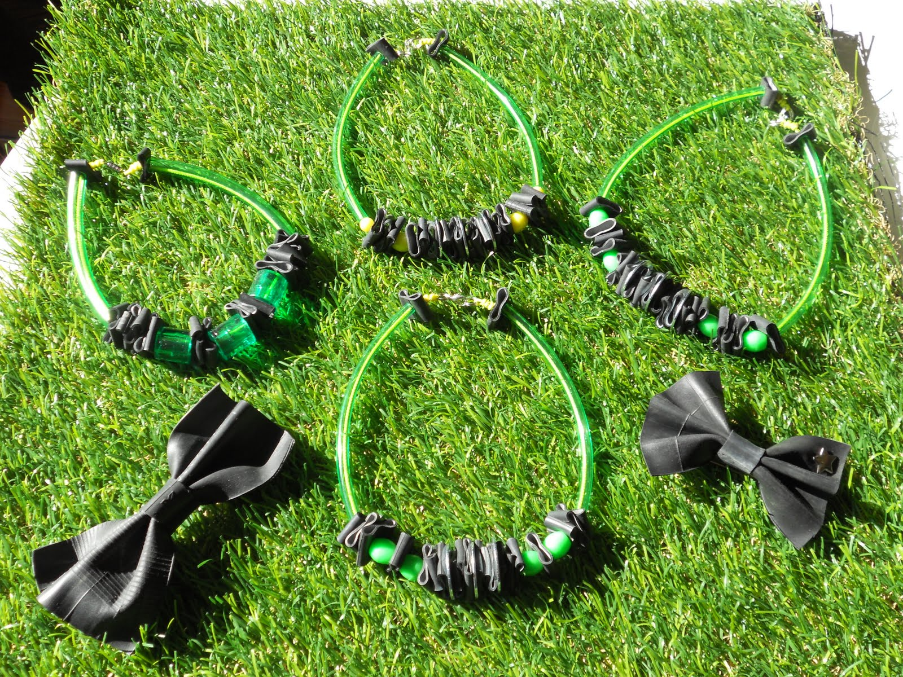

Connaissez-vous la règle de base pour choisir un bijou ? Opter pour un accessoire de forme identique à son visage ne fait que l'accentuer. Si vous avez un visage rond, oubliez les boucles d'oreilles rondes elles aussi. Préférez de jolies boucles pendantes à hauteur de votre mâchoire. A contrario, un visage rectangulaire se tournera davantage vers des créoles. Un visage en coeur ou carré ? Vous pouvez tout porter ! Le collier, accessoire idéal pour mettre en beauté cou et décolleté, à condition de choisir la bonne longueur et la bonne forme. Si vous avez un visage rond, préférez un collier en V. Si vous avez un visage carré ou rectangulaire, tournez-vous vers un collier plus rond qui adoucira votre allure générale. Enfin, si vous avez une morphologie en O, un collier plat habillera à merveille votre décolleté.
En choisissant un vêtement, il ne nous viendrait pas à l'idée de le prendre trop petit ou trop grand. On recherche la bonne taille, celle qui met la silhouette en valeur. Pour un bijou, le principe est le même ! Pour une chaîne par exemple, un ras du cou bien porté mesure 40 centimètres en moyenne. Plus le collier est long, plus le pendentif est mobile et léger. Autre bijou, la bague. Elle habille à ravir une main lorsqu'elle est bien choisie. Commencez par trouver le numéro de bague qui correspond à la grosseur de votre doigt. N'oubliez pas également d'adapter la taille du bijou à votre morphologie. Si vos doigts sont ronds, préférez une bague un peu large. Si vous avez les doigts longs, vous avez de la chance, vous pouvez tout porter.
Certains bijoux ne se portent pas au bureau comme en soirée. Il convient d'adapter votre choix à l'occasion. Il serait de mauvais ton de jouer les working-girls tout en paillettes ou de briller de mille feux lors du brief hebdomadaire. Idem pour les bijoux qui font gling-gling. On pense, par exemple, aux bracelets superposés qui agacent les collègues lorsque vous tapez sur le clavier. Gardez à l'esprit que les bijoux attirent l'oeil. Même si vous affectionnez les colliers-coquillages, réservez-les pour le week-end sous peine de perdre en crédibilité. Un bijou, une occasion, sauf exception !
